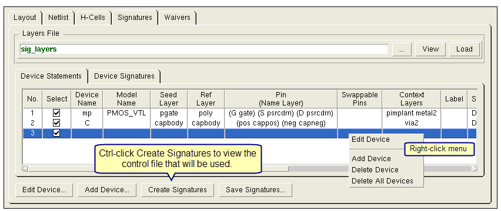

You can use Calibre
Interactive nmLVS to create a device signature file. Device signatures enable
the matching of devices in the layout to a specific geometric pattern,
rather than matching to just the layers present. The signature creation
process from the GUI is a standalone step, separate from your LVS
comparison or netlist extraction run. You can save the device commands
with the generated device signatures to a new file or append to
an existing file. An Include statement is typically used to include
the Device statements with signatures in the rule file for your
Calibre nmLVS run.
Prerequisites
A
Calibre Advanced Device Properties (ADP) product license in addition
to a Calibre nmLVS license.
A
layout file in a geometric format specified on the Inputs pane in
the Layout tab; see “Layout Input in Calibre Interactive nmLVS”.
A
rule file specified on the Rules pane. See “Specifying a Rule File for a Calibre nmLVS Run”.
Transcript
output in Calibre Interactive must be enabled, which is the default
behavior. Transcript output is controlled with the “Disable transcript
output” setting (, Disable tab).
(Optional)
A Layers File. The Layers File specifies the device layers and the
layers used to generate the device signature. The file is used to
populate fields in the Edit Parameters for Device dialog. See “Layers File for Device Signature Creation” for the syntax of this file.
Procedure
- Click Inputs on
the left panel to display the Inputs pane.
- Click the Signatures tab,
which is shown in Figure 1. There are two sub-tabs:
Device Statements sub-tab —
Lists the parameters for the Device signature statements in table
form, including the Device statement used for signature generation.
Device Signatures sub-tab —
Lists the Device statements with the created signatures.
Figure 1. Signatures Tab in
LVS Inputs Pane
- (Optional) Specify and load
the Layers File.
- Specify the Layers File in
the text entry field. See “Layers File for Device Signature Creation” for the syntax of this file.
- Click Load to
load the Layers File data.
The layers are available in
dropdown lists in the appropriate sections of the Edit Parameters for Device Dialog Box.
Note: A pop-up note displays
if any layer parameters are missing in the Layers File; since all
layers may be entered manually, this note is for information only
and does not interfere with the signature creation process.
- Click the Add Device button
to add a new device, or right-click in the Device Signature area.
The Edit Parameters for Device dialog box opens.
- Enter all required layers
and options for signature creation. See “Edit Parameters for Device Dialog Box” for a definition of the fields
in the dialog.
- Click Save Device or Save
As New Device to update the entries in the Device Statements
table.
If you enabled “Use only seed
layers with attached text label” in the Edit Parameters for Device
dialog box, the Label column is filled in with the With Text statement
that defines the labeled seed layer.
Note: The new statement is not added
if any of the following errors occur:
- To add additional device statements,
repeat Steps 4 to 6.
- (Optional) If your rule file
includes an LVS Summary Report statement with a Tcl script for custom report generation,
it is required to generate the SVDB. Click the Outputs button
and enable “Create SVDB Database.”
- Click Create Signatures to
generate signatures for all of the device statements selected in
the Device Statements table.
Tip You can hold the Ctrl key and click the Create Signatures button
to view the rule file that will be used in the signature creation
run.
If a duplicate device definition
is detected between the created device statements from the GUI and
the device statements in the original rule file, an error message
displays and the run is aborted. Remove the duplicate statement
from either the rule file or the Device Statements table, and click Create
Signatures again.
You can view the Device statements
with the created signatures in the Device Signatures sub-tab.
If more than one signature is possible for a device, separate Device statements
for each signature are listed in the Device Signatures sub-tab.
- Click Save Signatures to
save the generated signature statements in a file. A dialog prompts
you for the filename; you can choose to overwrite the file or append
to it.
If you enabled “Use only seed
layers with attached text label” in the Edit Parameters for Device
dialog box, the With Text statement that defines the labeled seed
layer is also written to the saved file. The With Text statement
can also be viewed in the Label column of the Device
Statements sub-tab.
Results
At the end of the signature generation
process, the Device statements with the generated signatures are
saved in a signature file. To use the created signatures in your
Calibre nmLVS run, you can do one of the following:
Use the SVRF Include statement
to include the signature file in your rule file.
In Calibre Interactive, choose ,
then the Include tab to include the signature
file in your Calibre nmLVS run.
Note: A SVDB is created if the rule
file includes an LVS Summary Report statement and “Create SVDB Database” is enabled.